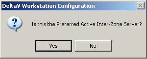
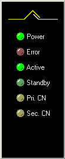

Redundant Inter-Zone Servers
In general, redundant Inter-Zone Servers do not complicate the installation and operation of a DeltaV Zones implementation. However, there are a few things to be aware of if your control system includes redundant servers. A pair of redundant servers is a single logical server to the DeltaV system. The pair of redundant servers is named and configured when you run Workstation configuration on the pair.
Running Workstation Configuration
When you run Workstation Configuration on either of the pair of redundant Inter-Zone Servers the following popup appears:

If you are running Workstation Configuration on the computer that will be the Active Inter-Zone Server, click Yes. If you are on the computer that will be the Standby, click No.
Complete the rest of Workstation Configuration on each of the pair.
The DeltaV Status Window
On redundant Inter-Zone Servers the system tray includes the DeltaV Status icon . Click this icon to open the DeltaV Status window:

The window contains the following indicators:
- Power — When illuminated, power is applied to the server.
- Error — When illuminated, an error has been detected (DeltaV services have stopped, not operational, and so on).
- Active — Illuminated when you are at the Active server. The light is solid if the server has been configured, flashing if unconfigured or being downloaded.
- Standby — Illuminated when you are at the Standby server. The light is solid if the server has been configured, flashing if unconfigured or being downloaded.
- Pri. CN — Flashing indicates the Primary DeltaV control network is communicating.
- Sec. CN — Flashing indicates the Secondary DeltaV control network is communicating.